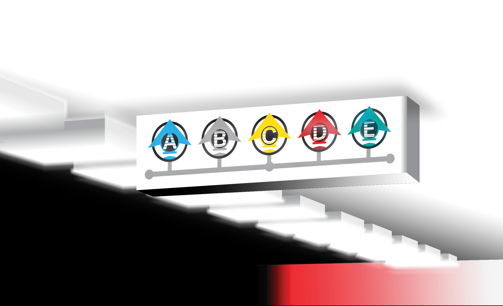

Current users:
Current time:
Dear Passenger,
Welcome to RMTS, Royal Metro Transit Services! We are delighted to welcome you to our
state-of-the-art metro system. Our stations are at your service around the clock, ensuring you
have the best transit experience possible.
After four months of dedicated development, we are thrilled to introduce you to our cutting-edge
infrastructure. RMTS has been commissioned to operate a metro service specifically for the 2024
graduation show of the Royal Academy of Art, The Hague.[1] This unique collaboration allows us to
provide an exceptional transportation solution tailored to enhance your experience at the
show.
At RMTS, our mission is to create the perfect journey for every passenger. Our meticulously
designed stations and services will be available throughout the entire graduation event,
offering swift and convenient travel between the various departments of the academy. This
seamless connectivity ensures you can make the most of your visit, saving you valuable time and
allowing you to fully immerse yourself in the artistic displays and activities.
Thank you for choosing RMTS. We look forward to serving you and making your transit experience
truly remarkable.
At RMTS, we pride ourselves on providing a comprehensive and efficient metro service designed to
cater to your needs during the Royal Academy of Art's 2024 graduation show. Our network consists
of five strategically located stations, ensuring convenient access and smooth transit throughout
the event.
Station 1: Main Entrance Hub
Located at the of the Royal Academy of Art, this station serves as the central node of our metro
system. It connects you to all major departments, making it easy to start your journey through
the graduation show.
Station 2: Underground center
Situated in the underground section, this station allows quick and easy access to exhibitions
and showcases featuring the work of some of the hidden gems of the graduation in the
underground. They also serve as an internal connection to the building facilities as well as the
academy shop.
Station 3: Fashion department
This station is positioned close to the Textile and Fashion department, providing seamless
transit to displays and events focused on cutting-edge fashion projects and creative
innovations.
Station 4: Graphic design
Located near the graphic design department, this station facilitates swift travel to screenings,
installations, and media-related exhibitions, ensuring you don’t miss any part of the exciting
presentations.
Station 5: Paradise
Our fifth station is uniquely positioned at an external location, a short distance from the
academy. This station connects you to an additional exhibition space that hosts larger
installations and collaborative projects, offering a broader scope of the artistic achievements
on display.
Each of our stations is designed with your convenience in mind, providing fast, reliable, and
comfortable transit options. Our goal is to enhance your experience at the graduation show by
minimizing travel time and maximizing your opportunity to explore the diverse and inspiring
works of the Royal Academy of Art’s talented graduates.
Code of Conduct
At RMTS, we are committed to ensuring a safe, welcoming, and enjoyable experience for all our
passengers. To achieve this, we have established a Code of Conduct that outlines the
expectations for behavior while using our metro services. Please adhere to the following
guidelines to help us maintain a pleasant and secure environment for everyone.
Accessibility
We strive to make our services accessible to all passengers, including those with disabilities.
All our stations and metro cars are equipped with features to accommodate passengers with
mobility challenges, ensuring that everyone can travel comfortably and independently.
Safety
Your safety is our top priority. Please follow these safety guidelines while using our
services:
Stand clear of the platform edge until the metro has
come to a complete stop.

Allow passengers to exit before boarding the
metro.

Hold onto handrails while the metro is in
motion.

No Graffiti or Vandalism
We take pride in maintaining a clean and pleasant environment for all passengers. Graffiti and
vandalism are strictly prohibited. Any individual found defacing property or causing damage to
our facilities will be subject to legal action.
Assistance
If you require assistance at any time, our friendly and professional staff are here to help. Do
not hesitate to approach any RMTS worker if you need guidance, have questions, or require any
form of assistance. Additionally, you can call our customer service line, available at all
stations and in each metro car, for immediate support.
General Conduct
Your safety is our top priority. Please follow these safety guidelines while using our
services:
Be respectful and considerate of fellow passengers
and staff.

Keep noise to a minimum to ensure a peaceful travel
environment.

Dispose of trash in designated bins and help us keep
the stations and metro cars clean.

Follow all posted signs and instructions from RMTS
staff.

By following this Code of Conduct, you help us create a safe, efficient, and enjoyable transit
experience for everyone. Thank you for your cooperation and understanding.
Sincerely,
The RMTS Team

Our company's focus is sustaining permanent metro stations through the time of the graduation
show. Our services will be freely accessible and constantly running through the opening
times.
Logo variants of RMTS
The Royal Metro Transit Services (from hiertho reffered to as "RMTS") is a company comissioned
to run a metro service through the 2024 graduation show of the Royal Academy of Art, The
Hague.[1]
Logo variants of RMTS
Logo variants of RMTS
The Royal Metro Transit Services (from hiertho reffered to as "RMTS") is a company comissioned
to run a metro service through the 2024 graduation show of the Royal Academy of Art, The
Hague.[1]
Customer Service
At RMTS, we are dedicated to providing exceptional customer service to ensure your journey is as
smooth and enjoyable as possible. Our team is here to assist you with any inquiries, concerns,
or feedback you may have.
How to Reach Us
If you need assistance or have any questions, there are several ways to get in touch with our
customer service team:
- In-Person Assistance: Our friendly and knowledgeable staff are available at all stations
to help you with directions, ticketing, and general inquiries. Look for the RMTS uniform, and
don’t hesitate to approach them for assistance.
- Email: For non-urgent matters, feedback, or detailed inquiries, you can reach us via email
at info@rmts.nl. We strive to respond to all email inquiries within 24
hours.
What We Offer
- Travel Information and Support**: Whether you need help planning your route, information on
schedules, or assistance with navigating our metro system, our team is here to provide the
information you need.
- Lost and Found**: Misplaced an item during your journey? Contact our customer service team,
and we will do our best to help you locate it.
- **Accessibility Services**: We are committed to ensuring all passengers have access to our
services. If you require any special assistance, please let us know, and we will make the
necessary arrangements to accommodate your needs.
- **Feedback and Suggestions**: We value your input and are always looking for ways to improve
our services. Feel free to share your experiences and suggestions with us. Your feedback helps
us serve you better.
In Case of Emergencies
For immediate assistance during your journey, use the emergency intercoms located in each metro
car and at all stations. Our staff are trained to handle emergencies and will respond promptly
to ensure your safety.
Thank you for choosing RMTS. We are here to make your transit experience as pleasant and
efficient as possible.
Sincerely,
The RMTS Team

The Pinnacle of Punctuality
Welcome to Station A, the crown jewel of RMTS and the epitome of reliability and efficiency. As
the most punctual station in our network, Station A prides itself on an unblemished record of
on-time departures and arrivals. Here, the metro is never late, ensuring that your journey is
seamless and stress-free.
The Busiest Hub
Station A is not just our most punctual station but also the busiest. It serves as a vital
transit hub, connecting passengers to the heart of the Royal Academy of Art and beyond. With its
high foot traffic, Station A operates with a sense of urgency and precision, handling the flow
of passengers with ease and ensuring that everyone reaches their destination promptly.
Efficiency and Urgency
At Station A, efficiency is paramount. Our team is dedicated to maintaining a fast-paced,
organized environment to accommodate the high volume of passengers. Every aspect of the
station's operation is optimized to minimize wait times and maximize the speed of service. From
the moment you step onto the platform, you can expect a swift and orderly boarding process,
allowing you to stay on schedule without any delays.
On-Time Performance
Station A boasts a flawless on-time performance record, making it the most
reliable station in our network. You can count on punctual departures and arrivals every
time.
High Capacity
Designed to handle the
highest volume of passengers, Station A is equipped with
multiple platforms and ample seating, ensuring that everyone can travel comfortably, even during
peak hours.
Rapid Service
With its streamlined operations, Station A guarantees rapid service, reducing
wait times and ensuring that your transit experience is as efficient as possible.
Station A exemplifies the commitment of RMTS to provide top-tier transit services. Whether you
are commuting to an exhibition, heading to a class, or exploring the Royal Academy of Art,
Station A ensures you do so with unparalleled punctuality and efficiency.
Thank you for choosing RMTS and experiencing the excellence of Station A. We look forward to
serving you with the utmost reliability and speed.
| Departures | Towards | |
|---|---|---|
| Row 1, Column 1 | Station E | |
| Row 2, Column 1 | Station E | |
| Row 3, Column 1 | Station E | |
| Row 4, Column 1 | Station E | |
| Row 5, Column 1 | Station E | |
| Row 6, Column 1 | Station E | |
| Row 7, Column 1 | Station E | |

Our safest and most intact station inside of our academy is situated in the underground section
of the building. It's upcoming opening will create a fast service towards the basement
productions of the academy, as well as connection for the workers of the facilities.[1]
Station B: The Beacon of Safety and
Cleanliness
Welcome to Station B, where safety, supervision, cleanliness, and brightness converge to create
an exemplary transit environment. As the safest station in our network, Station B is designed to
provide passengers with a secure, well-maintained, and inviting atmosphere.
Unmatched Safety
Station B stands out for its exceptional safety standards. We have implemented rigorous safety
protocols and surveillance systems to ensure the well-being of all passengers. Key safety
features include:
24/7 Surveillance
High-definition security cameras monitor every corner of the station around
the clock, providing continuous oversight and ensuring quick response to any incidents.
Frequent Patrols
Our trained security personnel conduct frequent patrols throughout the
station, offering a reassuring presence and immediate assistance when needed.
Emergency Readiness
Equipped with modern emergency facilities and clearly marked exits, Station
B is prepared to handle any situation swiftly and efficiently.
Superior Supervision
At Station B, we prioritize proactive supervision to maintain a safe and orderly environment.
Our dedicated staff are always on hand to assist passengers, manage crowds, and address any
concerns promptly. This high level of supervision ensures that Station B remains a
well-regulated and secure space for everyone.
Impeccable Cleanliness
Cleanliness is our hallmark. We maintain the highest standards of hygiene through
around the clock cleaning schedules and thorough sanitation practices.
Station B is designed to be bright and welcoming, creating a pleasant transit experience for all
passengers. In this duty of our, we would like to ask for your collaboration on order to keep
our station in it's state of the art shape. Let us have a pleasent travel experience
together.
Thank you for choosing RMTS and experiencing the excellence of Station B. We look forward to
ensuring your safety and comfort every step of the way.
| Departures | Towards | |
|---|---|---|
| Row 1, Column 1 | Station E | |
| Row 2, Column 1 | Station A | |
| Row 3, Column 1 | Station E | |
| Row 4, Column 1 | Station A | |
| Row 5, Column 1 | Station E | |
| Row 6, Column 1 | Station A | |
| Row 7, Column 1 | Station E | |
Welcome to Station C, a testament to RMTS's dedication to excellence and innovation. As our most
significant investment to date, Station C represents the pinnacle of our efforts to provide an
exceptional transit experience. With the most substantial financial resources allocated to its
development.
Our biggest investment
Station C stands as the crown jewel of RMTS's infrastructure projects. We have invested more
money in its construction and development than any other station in our network. This
significant financial commitment underscores our determination to create a world-class transit
hub that meets the highest standards of quality and functionality.
Cutting-Edge Features
Station C is designed with the latest technology and modern amenities to ensure a superior
passenger experience. Key features include:
State-of-the-Art Design
Incorporating contemporary architectural elements and advanced
engineering, Station C is both aesthetically pleasing and highly functional.
Smart Technology
The station is equipped with smart systems for lighting, climate
control, and passenger information, enhancing comfort and efficiency.
Sustainable Practices
Eco-friendly materials and energy-efficient systems are integrated
throughout the station, reflecting our commitment to sustainability.
Near Completion
Station C is the most advanced project in our network, and we are thrilled to announce that it
is nearing completion. The final touches are being added, and we are eagerly anticipating its
grand opening.
As our station will be finished by the opening we proudly include a live footage from the
platform.
| Departures | Towards | |
|---|---|---|
| Row 1, Column 1 | Station E | |
| Row 2, Column 1 | Station A | |
| Row 3, Column 1 | Station E | |
| Row 4, Column 1 | Station A | |
| Row 5, Column 1 | Station E | |
| Row 6, Column 1 | Station A | |
| Row 7, Column 1 | Station E | |

Welcome to Station D, the latest milestone in RMTS’s continuous commitment to enhancing urban
transit. As the newest addition to our metro system, Station D represents our ongoing efforts to
expand and improve our services for passengers.
Freshly Launched
Station D is our most recently launched station, showcasing the latest in design and technology.
Its recent completion means that passengers can enjoy brand-new facilities and cutting-edge
amenities from day one. The station has been meticulously planned and executed to ensure it
meets the modern needs of urban commuters.
Modern Design
With its sleek, contemporary design, Station D offers a visually appealing and functional
environment. Key design features include:
Innovative Architecture
The station boasts a modern architectural style, combining
functionality with aesthetic appeal to create a pleasant atmosphere.
User-Friendly Layout
Designed with passenger convenience in mind, the layout of Station D
ensures easy navigation and minimal congestion, even during peak hours.
Advanced
Technology
Station D incorporates the latest technological advancements to enhance the passenger
experience.
Sustainability Focus
As part of RMTS's commitment to sustainability, Station D integrates eco-friendly practices and
materials. Sustainable features include:
Energy-Efficient Lighting
LED lighting throughout the station reduces energy consumption
while providing bright, clear illumination.
Green
Building Materials
Eco-friendly materials have been used in the construction of
Station D, minimizing its environmental impact.
Passenger Amenities
Station D is equipped with a variety of amenities to enhance comfort and convenience for all
passengers:
Comfortable Waiting Areas
Spacious seating and climate-controlled environments ensure a
pleasant wait for your metro.
Accessibility Features
Designed to be fully accessible, Station D includes elevators,
ramps, and other features to assist passengers with disabilities.
A New Era in Transit
Station D is more than just a new station; it signifies the beginning of a new era in urban
transit for RMTS. By integrating the latest design, technology, and sustainability practices,
Station D sets a new standard for excellence in public transportation.
| Departures | Towards | |
|---|---|---|
| Row 1, Column 1 | Station E | |
| Row 2, Column 1 | Station A | |
| Row 3, Column 1 | Station E | |
| Row 4, Column 1 | Station A | |
| Row 5, Column 1 | Station E | |
| Row 6, Column 1 | Station A | |
| Row 7, Column 1 | Station E | |

Welcome to Station E, a symbol of RMTS’s growth and our commitment to extending high-quality
transit services to new areas. As our most recent extension, Station E broadens our network,
providing enhanced connectivity and accessibility for passengers.
Extending Our Reach
Station E represents a significant step in the expansion of the RMTS metro system. Strategically
located to serve new areas, this station extends our reach, bringing the convenience and
efficiency of our services to more passengers than ever before. Whether you are commuting for
work, education, or leisure, Station E connects you to a broader array of destinations.
Strategic Location
The location of Station E has been carefully selected to maximize its impact and convenience.
Key benefits of its location include:
New Community Access
Station E brings metro services to neighborhoods and districts
previously underserved, fostering greater community connectivity and economic development.
Interchange Opportunities
Positioned to offer easy interchange with other modes of
transport, Station E enhances overall mobility within the region.
Modern Infrastructure
Station E features the latest in metro station design and infrastructure, ensuring a top-notch
experience for all passengers. Highlights include:
Advanced Construction
Built with the latest construction techniques and materials,
Station E is designed for durability, safety, and comfort.
Passenger-Friendly Design
Spacious platforms, clear signage, and intuitive layouts make
navigating the station easy and stress-free.
Enhanced Services
To support its role as an extension station, Station E offers a range of enhanced services and
amenities, ensuring a comprehensive transit experience:
Expanded Service Hours
Extended operating hours accommodate the diverse schedules of our
passengers, ensuring convenient travel at all times.
Real-Time Information
Digital displays provide up-to-the-minute information on schedules
and service changes, helping passengers plan their journeys effectively.
| Departures | Towards | |
|---|---|---|
| Row 1, Column 1 | Station A | |
| Row 2, Column 1 | Station A | |
| Row 3, Column 1 | Station A | |
| Row 4, Column 1 | Station A | |
| Row 5, Column 1 | Station A | |
| Row 6, Column 1 | Station A | |
| Row 7, Column 1 | Station A | |